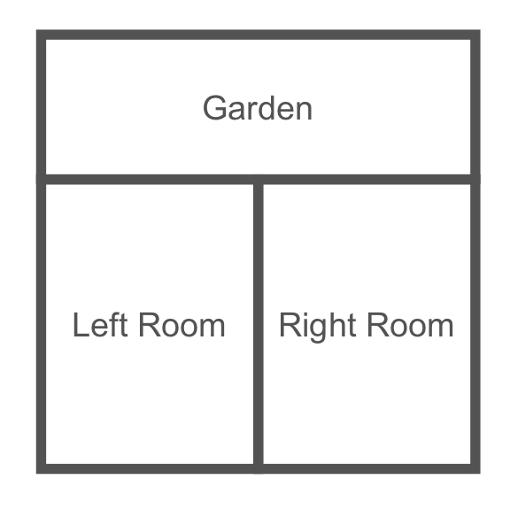
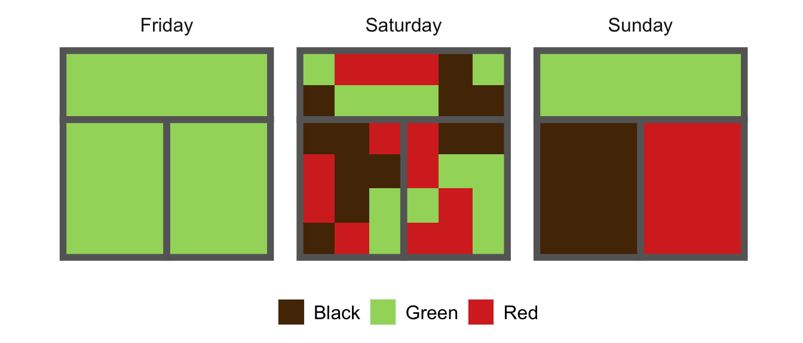

Entropy Measures Diversity
Editor’s note: this post and the following one are hastily revised blog posts from early in my graduate career. They reflect some simplistic thinking about questions of segregation and equity. I am working to do better, and I own all mistakes.
This post is about mathematical methods for studying diversity and spatial segregation using information theory. I’d like to stipulate at the outset:
More generally, segregation refers to ideology, policy, and social processes. I’m not talking about any of these things: just patterned differences of distributions of people in space.
Why Information Theory?
Information theory is the mathematical theory of what is learnable and communicable. It might not be obvious that information theory is a promising framework for thinking about diversity and segregation. The study of segregation isn’t usually viewed as an inference or communication engineering problem, and therefore doesn’t get much attention from information theorists and statisticians. On the other hand, sociological researchers in quantitative segregation studies do use information-theoretic measures, but tend to be less concerned about the mathematical subtleties. My goal in this blog post and the next is to develop information theory from the ground up as an organizing framework for thinking about diversity segregation. This framework both makes explicit the logic of some of our intuitive thinking about segregation, and also points the way to a wide vista of important extensions, generalizations, and applications.
Agenda
The agenda for this series of posts is to formulate and prove a beautiful equation that organizes some key concepts in quantitative segregation studies:
- An elementary development of information theory in the context of categorical segregation. Our main focus will be on the entropy, conditional entropy, and mutual information, and what they mean in this context. We’ll ultimately develop a rather beautiful equation that organizes a few key concepts in segregation studies:
\[\text{Global Diversity} = \text{Local Exposure} + \text{Global Segregation}\]
In order to cash out each of these terms in math, we are going to study the entropy, conditional entropy, and mutual information.
What mathematical background do you need? I won’t be assuming any prior knowledge of information theory, although it certainly doesn’t hurt.[^1] You’ll need elementary probability theory – concepts like conditional probabilities and expectation values will be enough.
All that said, let’s talk about entropy! First we’ll set up a little toy scenario to analyze.
The Setting
They say to write what you love, and what I love is tea. Back in my hometown, there’s a great cafe that I used to haunt endlessly in my high school days. The cafe has two main rooms, plus an outdoor garden out back. Schematically, it looks something like this:

Let’s say the cafe serves just three beverages, all of them different kinds of tea: black, red, and green. This being a popular establishment, on any given day, the rooms are full of folks drinking tea. On three different days last week, the shop looked like this:

Each little square represents a person; there are \(6\times 6 = 36\) customers in the shop on both days. On Friday, we had an overwhelming wave of green tea fanatics, who left no room for drinkers of any other preferences in the shop. On Saturday, each of the three tea preferences was equally represented, and folks spread themselves throughout the shop more-or-less randomly. On Sunday, the three main tea preferences were again evenly represented, but they were cliquey–folks tended to sit in the same room as people who shared their tea preferences.
Diversity and Segregation
We’d like to use the tea shop to explore mathematical questions of diversity and segregation. Intuitively,
- Diversity is high when all kinds of tea drinkers (black, red, and green) are well-represented.
- Segregation is high when different kinds of tea drinkers tend to occupy different rooms.
We’ll explore the first idea in this post, and the second idea in the next post.
The Guessing Game
You are the manager of the cafe, and I am your assistant. Unfortunately, we ran out of tea today, but I have just enough time to run to our local supplier to restock. I assume that we serve 36 customers in a day, so the only question is how much of each tea I should buy. This shop has a bonus scheme in which I can earn a bonus to my base pay depending on how well the proportions of tea I bought match the customer’s preferences. Before I run out, I scan the room to see who our customers are: based on what they’ve ordered before, I know that the proportions of tea drinkers are \(P_\mathrm{black} = p_1\), \(P_\mathrm{green} = p_2\), and \(P_\mathrm{red} = p_3\). For example, of all the customers, \(100 \times p_2\) percent of them prefer green tea. Assuming we don’t sell any other kinds of tea, it must hold that \(p_1 + p_2 + p_3 = 1\), and further that \(p_i \geq 0\) for each \(i = 1,\ldots,3\).
I need to buy some tea, in proportions \(\hat{p}_1\), \(\hat{p}_2\), and \(\hat{p}_3\). What are the best proportions I should choose? It’s tempting to say that I should choose \(\hat{p} = p\). That is, I should choose the proportions of tea I buy to perfectly reflect our customer preferences That’s not wrong, but it’s important to understand why. And, as in all things, the reason why hinges on how you, my performance-based manager, are paying me.
Since the shop is paying me based on my performance in matching, my pay is a function \(f\) of \(p\) – the actual state of the world – and \(\hat{p}\) – my action. That is, if the true proportions of customers are given by \(p\) and I come back with \(\hat{p}\) proportions of black, red, and green teas, then my bonus is \(f(p, \hat{p})\). Somewhat surprisingly, it turns out that there’s only one payment function that encourages me to both (a) act on my best guess about what our customers will most enjoy and (b) rewards me based only on how well my action matched the customers we actually had, not the customers we “might have had.” This is the cross-entropy: \[ f(p, \hat{p}) \triangleq -\sum_i p_i \log \hat{p}_i\;.\]
Earlier, we had an intuition that the best thing for me to do was to pick proportions that match our customer preferences, that is, pick \(\hat{p} = p\). This turns out to be correct:
Proof. There are lots of ways to show this standard fact, but let’s do a simple calculation with Lagrange multipliers. First, we’ll need the gradient of \(f\) with respect to the components of \(\hat{p}\), which we calculate as:
\[ \nabla_\hat{p}f(p, \hat{p}) = \left(\frac{p_1}{\hat{p}_1},\cdots, \frac{p_n}{\hat{p}_n}\right)^T\]
The Lagrange multipliers come from the constraint that \(g(\hat{p}) \triangleq \sum_i \hat{p}_i = 1\). The gradient of the constraint function is just
\[\nabla_{\hat{p}} g(\hat{p}) = \underbrace{(1,\ldots,1)^T}_{n \text{ copies}}\;.\]
The method of Lagrange multipliers now requires that we find values of \(\hat{p}\) and some constant \(\lambda \neq 0\) that make the gradients collinear:
\[\begin{align} \nabla_\hat{p}f(p, \hat{p}) + \lambda \nabla_{\hat{p}} g(\hat{p}) &= 0 \\ g(\hat{p}) &= 1\;. \end{align}\]
This is a system of \(n+1\) equations in \(n+1\) unknowns (the components of \(\hat{p}\) and \(\lambda\)), so under reasonable regularity assumptions we expect a unique solution. Solving the first \(n\) equations show that \(\frac{p_i}{\hat{p}_i} = \frac{p_j}{\hat{p}_j}\) for all \(i\) and \(j\), and the constraint implies that \(\frac{\hat{p}_i}{p_i} = 1\), or \(\hat{p}_i = p_i\).
Are we done? Well, technically no: all we’ve shown is that \(\hat{p} = p\) is a critical point of \(f(p,\hat{p})\). For full rigor, what we should show next is that (a) this point is the only critical point and that (b) this point is indeed a local maximum. Both of these facts follow directly from the fact that \(f\) is strictly concave as a function of \(\hat{p}\). We’ll get into issues of concavity and convexity when we discuss generalizing diversity measures with Bregman divergences in a subsequent post.
Summing up from this section: we played a “guessing game,” in which I tried to pick a distribution over tea types black, red, and green that would maximize my bonus – which was in turn dependent on my performance as evaluated by the negative cross entropy. We proved that my best approach was to pick the distribution over tea types that perfectly mirrors the distribution over customers in the shop. Wasn’t that a fun game?
Entropy Measures Diversity
An important consequence of our result is that we can define the optimal reward function in terms of \(p\) alone. This function is so important that it has a name: it’s Shannon entropy \(H\), defined as
\[ H(p) \triangleq - \max_\hat{p} f(p, \hat{p}) = - \sum_i p_i \log p_i \;.\]
Intuitively, the entropy measures how “hard” the guessing game is: when \(H(p)\) is high, my reward in the guessing game is low, even when I make the best possible choice \(\hat{p} = p\).
Now, what makes the guessing game hard? The answer is: diversity! To see this, let’s check on a few properties of \(H(p)\). First, suppose that \(p = (1,0,0,\ldots)\), that is, there’s only one type of tea drinker in the cafe. Then, take a moment to convince yourself that \(H(p) = 0\). It’s easy to see that \(H(p)\) is nonnegative for any \(p\), so the single-tea-type cafe is an entropy minimizer. What distribution over tea types is an entropy maximizer? It’s a good exercise to do a Lagrange multiplier analysis similar to the one above to prove the following theorem:
Summing up what we just learned, the entropy \(H(p)\) is function of the customers in the cafe that determines how hard it is for me to succeed at the guessing game. The entropy is lowest (the game is easiest) when all customers prefer the same kind of tea, that is, when diversity is minimized. The entropy is highest (the game is hardest) when different tea preferences are represented in equal proportions, that is, when diversity is maximized. In summary, the entropy \(H\) is a measure of diversity. It is high when diversity is high, and low when diversity is low.
Let’s wrap up by calculating the entropies for the cafe customers on Friday, Saturday and Sunday cafe. In case you’ve forgotten, they looked like this:

On Friday, only one tea preference (green) is represented, and so \(H(p) = 0\). On both Saturday and Sunday, since each tea preference is equally represented on both days, \(p\) is the uniform distribution: \(p = \left(\frac{1}{3}, \frac{1}{3}, \frac{1}{3} \right)\). In this case, we have \(H(p) = \log 3 \approx 1.10\), the highest possible entropy in a world of just three types of tea drinkers. In summary, Friday had minimal diversity of tea drinkers; Saturday and Sunday had maximal diversity. Notice what the entropy doesn’t capture: the difference between Saturday and Sunday. This reflects the fact that segregation is a fundamentally different idea to diversity. We’ll see how to think about this mathematically in the next post.
Further Reading
- If you’d like to learn more about about information theory, check out Colah’s fantastic blog post, Visual Information Theory. That post focuses more on the inferential framework than I will today, but is an all-around fantastic resource.
- These notes give a more detailed exposition of the same overall approach and attitude.
- The next post in this series is called “Information Measures Segregation.”